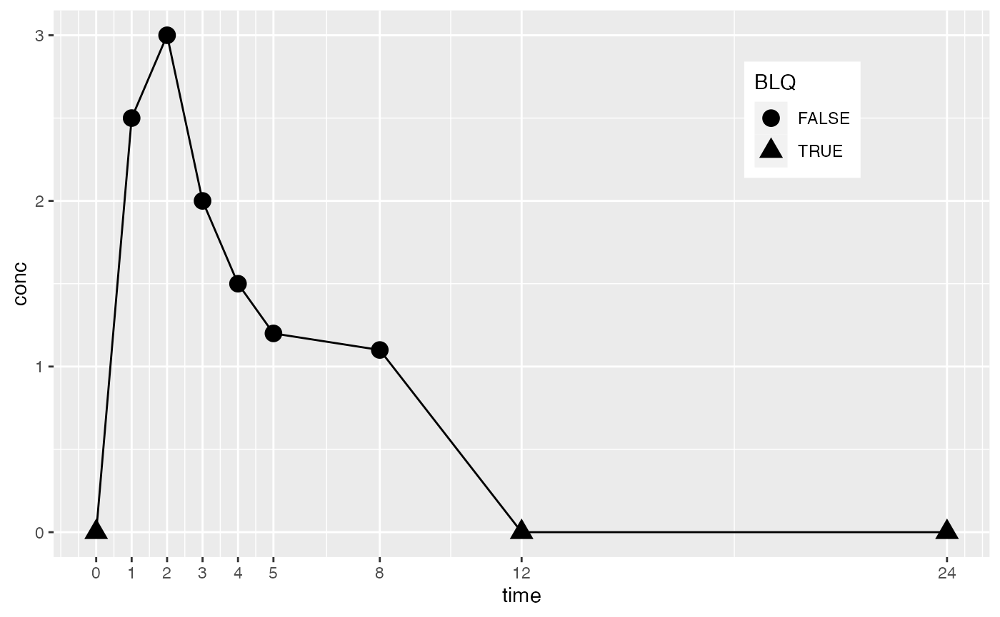
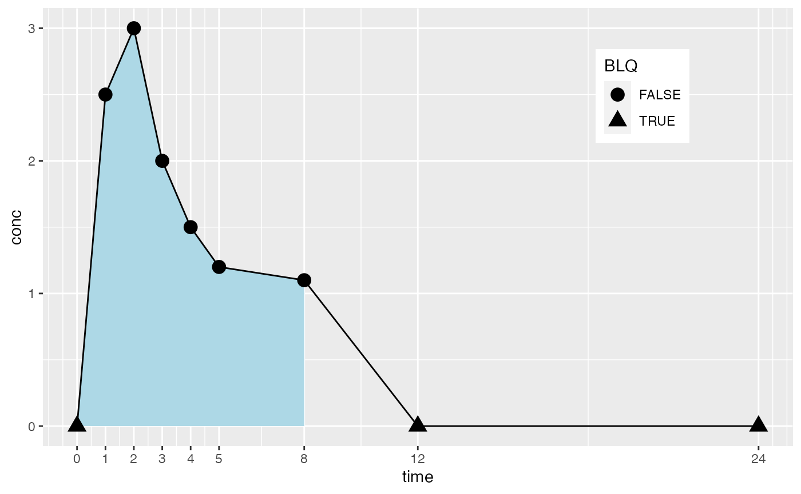
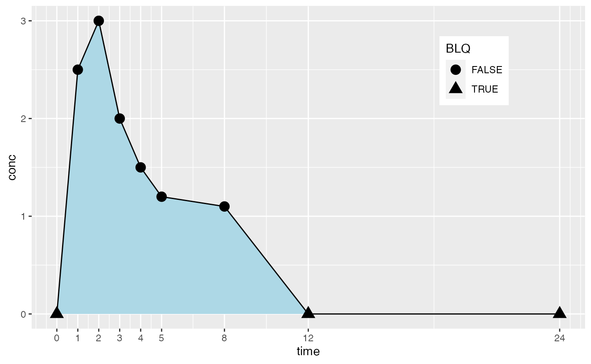
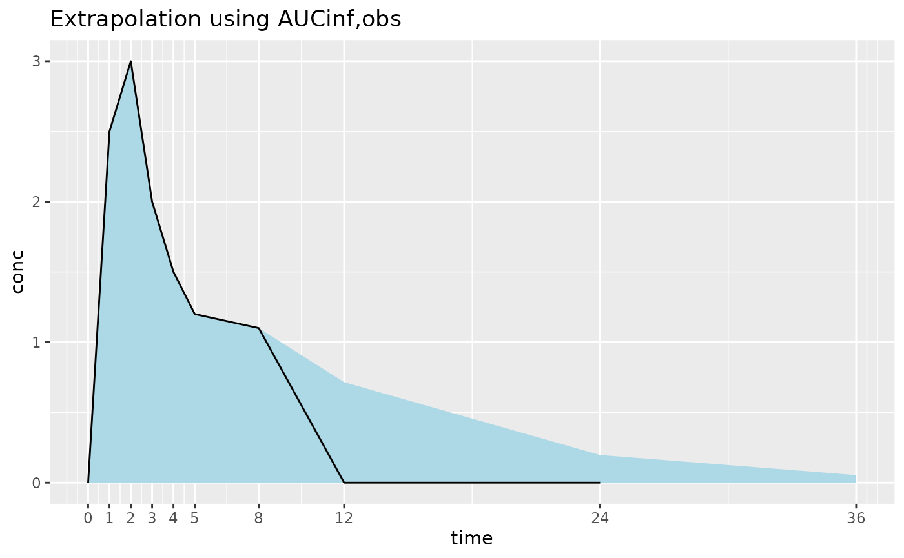
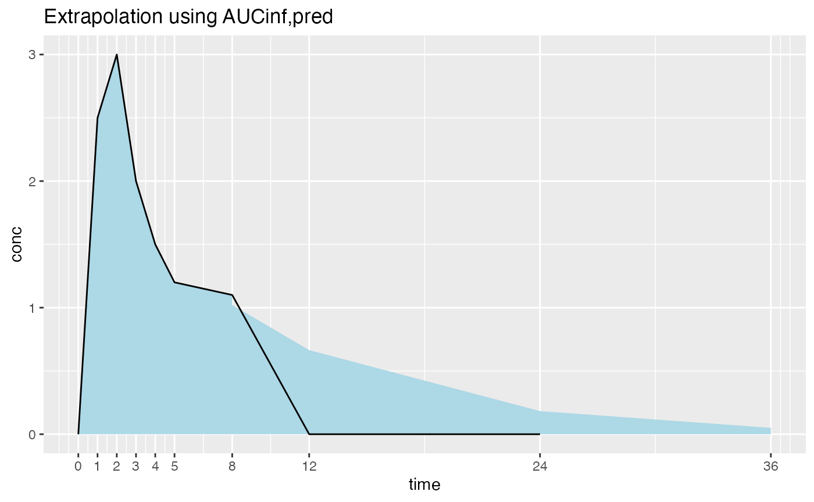

vignettes/AUC-Calculation-with-PKNCA.Rmd
AUC-Calculation-with-PKNCA.RmdArea Under the Curve (AUC) is a commonly-used metric for assessing exposure to a drug. Many variants of AUC exist, and the information below will assist in determining both the appropriate AUC and how to calculate it.
For the below examples, the following data will be used.
suppressPackageStartupMessages({
library(PKNCA)
library(dplyr)
library(cowplot)
library(knitr)
library(ggplot2)
})
scale_colour_discrete <- scale_colour_hue
scale_fill_discrete <- scale_fill_hue
my_conc <- data.frame(conc=c(0, 2.5, 3, 2, 1.5, 1.2, 1.1, 0, 0),
time=c(0:5, 8, 12, 24),
subject=1)
my_conc$BLQ <- my_conc$conc == 0
my_conc$measured <- TRUE
ggplot(my_conc,
aes(x=time,
y=conc,
shape=BLQ,
group=subject)) +
geom_line() +
geom_point(size=4) +
scale_x_continuous(breaks=my_conc$time) +
theme(legend.position=c(0.8, 0.8))
For the purpose of illustration, NCA parameters will also be calculated for each of the AUC types below. Note that in the results, more parameters are returned than were requested. The additional parameters are the set of parameters required to calculate the requested parameters.
conc_obj <- PKNCAconc(my_conc, conc~time|subject)
data_obj <- PKNCAdata(data.conc=conc_obj,
intervals=data.frame(start=0,
end=24,
aucall=TRUE,
auclast=TRUE,
aucinf.pred=TRUE,
aucinf.obs=TRUE))
results_obj <- pk.nca(data_obj)## No dose information provided, calculations requiring dose will return NA.
kable(as.data.frame(results_obj))| subject | start | end | PPTESTCD | PPORRES | exclude |
|---|---|---|---|---|---|
| 1 | 0 | 24 | auclast | 12.9965842 | NA |
| 1 | 0 | 24 | aucall | 15.1965842 | NA |
| 1 | 0 | 24 | tmax | 2.0000000 | NA |
| 1 | 0 | 24 | tlast | 8.0000000 | NA |
| 1 | 0 | 24 | clast.obs | 1.1000000 | NA |
| 1 | 0 | 24 | lambda.z | 0.1075592 | NA |
| 1 | 0 | 24 | r.squared | 0.7580245 | NA |
| 1 | 0 | 24 | adj.r.squared | 0.6370368 | NA |
| 1 | 0 | 24 | lambda.z.time.first | 3.0000000 | NA |
| 1 | 0 | 24 | lambda.z.n.points | 4.0000000 | NA |
| 1 | 0 | 24 | clast.pred | 1.0216136 | NA |
| 1 | 0 | 24 | half.life | 6.4443313 | NA |
| 1 | 0 | 24 | span.ratio | 0.7758757 | NA |
| 1 | 0 | 24 | aucinf.obs | 23.2235095 | NA |
| 1 | 0 | 24 | aucinf.pred | 22.4947355 | NA |
AUC0-last calculates the AUC from time 0 to the last value above the limit of quantification, tlast (within PKNCA, this is the last value above 0). In the figure below, AUC0-last integrate the shaded region. Integration after tlast is 0.
tlast <- pk.calc.tlast(conc=my_conc$conc,
time=my_conc$time)
tlast## [1] 8
my_conc$include_auclast <- my_conc$time <= tlast
ggplot(my_conc,
aes(x=time,
y=conc,
shape=BLQ,
group=subject)) +
geom_ribbon(data=my_conc[my_conc$include_auclast,],
aes(ymin=0, ymax=conc),
fill="lightblue") +
geom_line() +
geom_point(size=4) +
scale_x_continuous(breaks=my_conc$time) +
theme(legend.position=c(0.8, 0.8))
AUCall starts with AUC0-last and then integrates from tlast to the first point after tlast with a linear interpolation to zero. From the second point after tlast to \(\infty\) is considered zero.
first_after_tlast <- my_conc$time[my_conc$time > tlast][1]
first_after_tlast## [1] 12
my_conc$include_aucall <- my_conc$time <= first_after_tlast
ggplot(my_conc,
aes(x=time,
y=conc,
shape=BLQ,
group=subject)) +
geom_ribbon(data=my_conc[my_conc$include_aucall,],
aes(ymin=0, ymax=conc),
fill="lightblue") +
geom_line() +
geom_point(size=4) +
scale_x_continuous(breaks=my_conc$time) +
theme(legend.position=c(0.8, 0.8))
AUC0-\(\infty\) is commonly used for single-dose data. It calculates the AUC0-last and then extrapolates to \(\infty\) using the estimated half-life. Two starting points are used to estimate from tlast to \(\infty\), the observed or half-life predicted concentration at tlast (clast.obs and clast.pred).
The two figures below illustrate the integration with AUC0-\(\infty\),obs and AUC~0-\(\infty\),pred$. The difference between the tow figures is most evident at time=8 where there is a discontinuity in integration at tlast due to using clast.pred after that point and clast.obs before that point. (To illustrate the integration differences, BLQ indicator shapes have been removed. BLQ is handled identically to previous figures.)
# Add one row to illustrate extrapolation beyond observed data
my_conc <-
rbind(my_conc,
data.frame(conc=NA,
time=36,
subject=1,
BLQ=NA,
measured=FALSE,
include_auclast=FALSE,
include_aucall=FALSE))
# Extrapolate concentrations for aucinf.obs
my_conc$conc_aucinf.obs <- my_conc$conc
my_conc$conc_aucinf.obs[my_conc$BLQ | is.na(my_conc$BLQ)] <-
interp.extrap.conc(conc=my_conc$conc,
time=my_conc$time,
time.out=my_conc$time[my_conc$BLQ | is.na(my_conc$BLQ)],
lambda.z=as.data.frame(results_obj)$PPORRES[as.data.frame(results_obj)$PPTESTCD %in% "lambda.z"])
# Extrapolate concentrations for aucinf.pred
my_conc$conc_aucinf.pred <- my_conc$conc
my_conc$conc_aucinf.pred[my_conc$BLQ | is.na(my_conc$BLQ)] <-
interp.extrap.conc(conc=my_conc$conc,
time=my_conc$time,
time.out=my_conc$time[my_conc$BLQ | is.na(my_conc$BLQ)],
lambda.z=as.data.frame(results_obj)$PPORRES[as.data.frame(results_obj)$PPTESTCD %in% "lambda.z"],
clast=as.data.frame(results_obj)$PPORRES[as.data.frame(results_obj)$PPTESTCD %in% "clast.pred"])
my_conc$conc_aucinf.pred[my_conc$time == tlast] <-
as.data.frame(results_obj)$PPORRES[as.data.frame(results_obj)$PPTESTCD %in% "clast.pred"]
ggplot(my_conc[!is.na(my_conc$conc),],
aes(x=time,
y=conc,
#shape=BLQ,
group=subject)) +
geom_ribbon(data=my_conc,
aes(ymin=0, ymax=conc_aucinf.obs),
fill="lightblue") +
geom_line() +
#geom_point(size=2) +
scale_x_continuous(breaks=my_conc$time) +
theme(legend.position=c(0.8, 0.8)) +
labs(title="Extrapolation using AUCinf,obs")
ggplot(my_conc[!is.na(my_conc$conc),],
aes(x=time,
y=conc,
#shape=BLQ,
group=subject)) +
geom_ribbon(
data=arrange(
bind_rows(mutate(my_conc,
before=FALSE),
mutate(filter(my_conc, time == tlast),
conc_aucinf.pred=conc,
before=TRUE)),
time, desc(before)),
aes(ymin=0,
ymax=conc_aucinf.pred),
fill="lightblue") +
geom_line() +
#geom_point(size=2) +
scale_x_continuous(breaks=my_conc$time) +
theme(legend.position=c(0.8, 0.8)) +
labs(title="Extrapolation using AUCinf,pred")
Partial AUCs integrate part of the area within a time range of interest. Partial AUCs are often of interest to assess bioequivalence with more detail than AUC0-\(\infty\) or AUC0-last may indicate. Within PKNCA, partial AUCs are treated like AUClast with start and end times separately selected. (In a future version of PKNCA, they will be more simply calculated using an AUCinterval.)
When the starting and ending times are observed within the data, partial AUCs can be calculated using the parameter auclast as illustrated below.
# Interpolation not required
data_obs_obj <- PKNCAdata(conc_obj, intervals=data.frame(start=0, end=2, auclast=TRUE))
results_obs_obj <- pk.nca(data_obs_obj)## No dose information provided, calculations requiring dose will return NA.
kable(as.data.frame(results_obs_obj))| subject | start | end | PPTESTCD | PPORRES | exclude |
|---|---|---|---|---|---|
| 1 | 0 | 2 | auclast | 4 | NA |
When the starting and ending times are not observed within the data or when samples are below the limit of quantification, concentrations must be interpolated and added to the dataset before calculation as illustrated below.
# Interpolation required
my_conc_interp <-
arrange(
bind_rows(
my_conc,
data.frame(conc=interp.extrap.conc(conc=my_conc$conc, time=my_conc$time, time.out=1.5),
time=1.5,
subject=1)),
time)
kable(my_conc_interp)| conc | time | subject | BLQ | measured | include_auclast | include_aucall | conc_aucinf.obs | conc_aucinf.pred |
|---|---|---|---|---|---|---|---|---|
| 0.00 | 0.0 | 1 | TRUE | TRUE | TRUE | TRUE | 0.0000000 | 0.0000000 |
| 2.50 | 1.0 | 1 | FALSE | TRUE | TRUE | TRUE | 2.5000000 | 2.5000000 |
| 2.75 | 1.5 | 1 | NA | NA | NA | NA | NA | NA |
| 3.00 | 2.0 | 1 | FALSE | TRUE | TRUE | TRUE | 3.0000000 | 3.0000000 |
| 2.00 | 3.0 | 1 | FALSE | TRUE | TRUE | TRUE | 2.0000000 | 2.0000000 |
| 1.50 | 4.0 | 1 | FALSE | TRUE | TRUE | TRUE | 1.5000000 | 1.5000000 |
| 1.20 | 5.0 | 1 | FALSE | TRUE | TRUE | TRUE | 1.2000000 | 1.2000000 |
| 1.10 | 8.0 | 1 | FALSE | TRUE | TRUE | TRUE | 1.1000000 | 1.0216136 |
| 0.00 | 12.0 | 1 | TRUE | TRUE | FALSE | TRUE | 0.7153906 | 0.6644116 |
| 0.00 | 24.0 | 1 | TRUE | TRUE | FALSE | FALSE | 0.1967862 | 0.1827632 |
| NA | 36.0 | 1 | NA | FALSE | FALSE | FALSE | 0.0541310 | 0.0502736 |
conc_interp_obj <- PKNCAconc(my_conc_interp, conc~time|subject)
data_interp_obj <- PKNCAdata(conc_interp_obj, intervals=data.frame(start=0, end=1.5, auclast=TRUE))
results_interp <- pk.nca(data_interp_obj)## No dose information provided, calculations requiring dose will return NA.
as.data.frame(results_interp)## # A tibble: 1 × 6
## subject start end PPTESTCD PPORRES exclude
## <dbl> <dbl> <dbl> <chr> <dbl> <chr>
## 1 1 0 1.5 auclast 2.56 <NA>